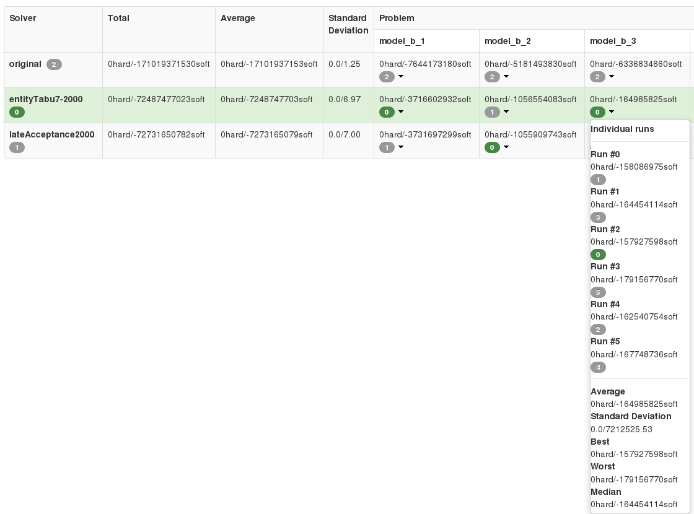
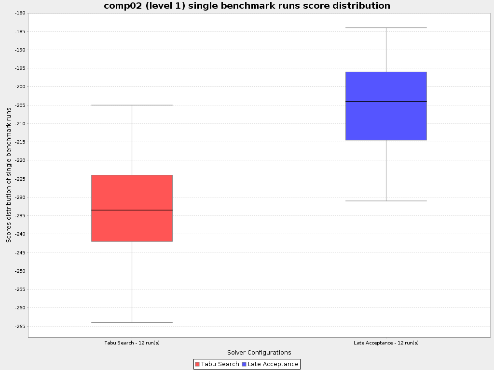

How lucky are your random seeds?
For a long time, it was uncertain if choosing different random seeds impacted the results of OptaPlanner.
Are there random seeds that yield statistically significant improvements to the
results of your solver? A new feature in OptaPlanner’s Benchmarker will help us figure it out.
Statistical benchmarking
As of version 6.4.0.Beta1, the benchmarker will support statistical benchmarking — built-in support for running individual benchmarks repeatedly to eliminate negative influences
of the hardware or operating system on our benchmark results.
Benchmarker will visualize the multiple runs in the report:

OptaPlanner also shows us the distribution of the scores of repeated benchmark runs and compares them with
the other solver configurations for a given problem (dataset):

We can enable it by adding just one line into our configuration: <subSingleCount>10</subSingleCount>.
For more information, read the section on statistical benchmarking in the documentation for OptaPlanner 6.4.0.Beta1.
With the help of statistical benchmarking we can be more sure than ever before that our assumptions about solver
configuration reliability in production are correct.
Benchmark methodology
To reproduce, we need OptaPlanner 6.4.0.Beta1 or newer.
We run 3 of OptaPlanner’s use cases with a
subSingleCountgreater than 1 in environment modePRODUCTION(as of 7.0 renamed toNON_REPRODUCIBLE).OptaPlanner supports several so called environment modes.
One of them,PRODUCTION,
is obviously meant for runs in a production environment.
In this environment mode, OptaPlanner will choose a random seed for it’s
pseudo-random number generator
(PRNG) at random (JDK default).
Read more about this in the documentation.We use the basic PRNG implementation in all our benchmarks (
java.util.Random).
Specific configuration changes:
All of these configuration files are from the OptaPlanner Examples module, version
6.4.0.Beta1.In all use-cases: in
*BenchmarkConfig.xml:Remove all single/problem statistics (all
<singleStatisticType>andproblemStatisticTypeelements).Add
<environmentMode>PRODUCTION</environmentMode>
to the inherited solver configuration (<inheritedSolverBenchmark>element).Remove the
<parallelBenchmarkCount>element (defaults to 1 — single threaded runs).
General benchmark: in
generalOptaPlannerBenchmarkConfig.xml:Add
<subSingleCount>10</subSingleCount>to the inherited solver benchmark configuration.
Curriculum Course benchmark: in
curriculumCourseBenchmarkConfig.xml:<subSingleCount>6</subSingleCount>to the inherited solver benchmark configuration.Remove datasets (
<inputSolutionFile>elements) comp08-comp14 (keep only comp01-comp07).Remove the
FIRST_FIT_DECREASINGsolver benchmark (<solverBenchmark>element).
MachineReassignment:
Add
<subSingleCount>8</subSingleCount>to the inherited solver benchmark configuration.Remove the
originalandlateAcceptance1000solver benchmark (<solverBenchmark>elements).
Each run takes about 10 hours.
Every planning problem runs for at least 5 minutes. Every run starts with a 30 second JVM warm up which is discarded.
Other VM arguments:
-Xmx8192m
Oracle JDK version:1.7.0_79
Software:Linux version 4.1.6-201.fc22.x86_64
Hardware:Intel® Core™ i7-4810MQ CPU @ 2.80GHz
To reproduce these benchmarks locally, build OptaPlanner from source
and run the classes
GeneralOptaPlannerBenchmarkApp,
CurriculumCourseBenchmarkApp
and
MachineReassignmentBenchmarkApp
after applying the configuration changes described above.
Benchmark results
You can view the individual benchmark reports at the following links:
This benchmark solves one or two datasets of different use-cases with only 1 solver configuration per use-case.
There were no differences in hard scores between runs.
In the problem benchmark score distribution charts of runs,
we can see that there are no outliers (they would be drawn as circles in the charts).The biggest difference between runs was in the CurriculumCourse use-case, dataset
comp08:
the best run was 17% better than the worst one.
Curriculum Course benchmark report
This benchmark solves 7 datasets of the same use-case with 2 different solver configurations.
There were differences in hard score between runs (
comp02,comp05,comp06) — this use-case is prone to them.Specifically, Tabu Search on this use-case is prone to finding an infeasible solution – Late Acceptance only had 5
infeasible runs (4 of them on thecomp05dataset and 1 oncomp02) as compared to Tabu Search’s 13 infeasible runs.
There were no outliers on the hard score level.
There were 2 outliers: 1 in a run of the Late Acceptance solver configuration
(incomp07, where the worst run was 25% worse than the best) and 1 in a run of the Tabu Search solver configuration
(incomp01where the best run was 91% better than the worst).The biggest difference between runs (without outliers) in a single dataset was using Tabu Search on
comp07,
where the best run was about 27% better than the worst.
Machine Reassignment benchmark report
This benchmark solves 10 datasets of the same use-case with 2 different solver configurations.
There were no differences in hard scores between runs.
The only outlier was in a run of the Late Acceptance solver configuration in
model_b_7,
where the best run was still only ~3% better than the worst.The biggest difference between runs was about 8% (Tabu Search on
model_b_3).All the problem benchmark score distribution charts, the reliability comparison of different solver configurations
is visualized very nicely (see for examplemodel_b_8— Late Acceptance is a lot more reliable in that dataset).In this use-case, we can see a significant triumph of one solver configuration against the other:
f.e. on the datasetsmodel_b_5andmodel_b_9
(the worst Tabu Search run on these datasets wins over the best Late Acceptance run by a big margin).
Summary
The difference between the best and worst run can seem large, but this measurement varies wildly per dataset — there are datasets, where all solver configuration runs vary greatly
(comp01 of CurriculumCourse) and then there are datasets,
where all solver configuration runs vary only by a tiny bit (model_b_4 of MachineReassignment).
This indicates that the variance is more influenced by the dataset than by the random seed or solver configuration.
The various outliers suggest that there are “lucky” and “unlucky” random seeds,
but they don’t seem to influence the results in any significant way in general.
Again, there are specific datasets and use-cases which are more or less prone to changes in random seeds — we can can make use of statistical benchmarking to confirm if this is or isn’t our case.
Do we need a lucky random seed to get optimal results?
We need more than just a lucky random seed to get optimal results.
My personal opinion is, that our test results were inconclusive.
There are several indicators:
We can’t tell which random seed is better, because even a bad performing one in a 5 minute run could generate awesome moves in a 10 minute run.
On some datasets, our scores were stable whereas on others, the results varied wildly.
Conclusion
In production, definitely use the PRODUCTION environment mode and let OptaPlanner choose a random seed on random.
A good choice might save you or your business quite a bit of money,
but don’t expect to always find a random seed that can affect the outcome in any (statistically) significant way.